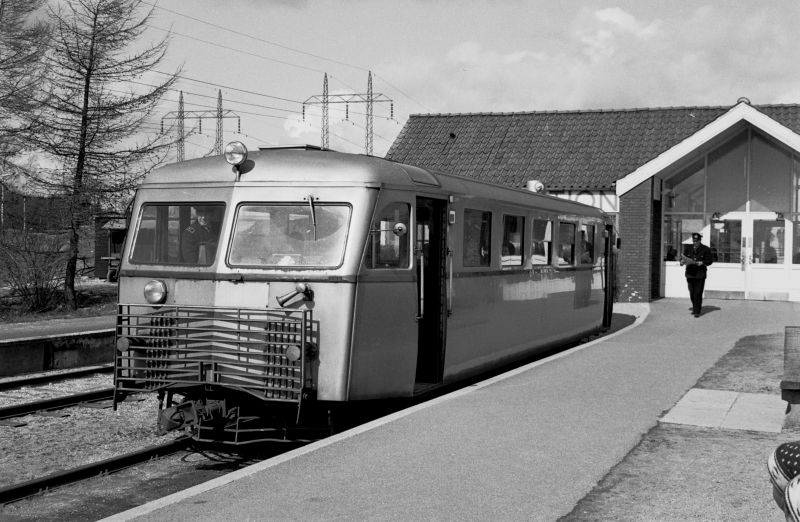

Naerum line
The 910 train (Direction: Jægersborg) has 8 stations from Nærum to
Jægersborg. The railway opened as Lyngby-Vedbæk railway in 1900 with an
aim of serving the industries that had settled in the Mølleå valley to
exploit the hydraulic power of the Mølleå.
Trains on the Nærum Line are operated by the railway company Lokaltog.
Despite being a single-track railway, Lokaltog operates an ambitious
timetable on the Nærum Line with a 20 minute frequency most of the day.
Choose any of the 910 train stations by
CLICKINGon the icons on the map to find
updated real-time schedules.